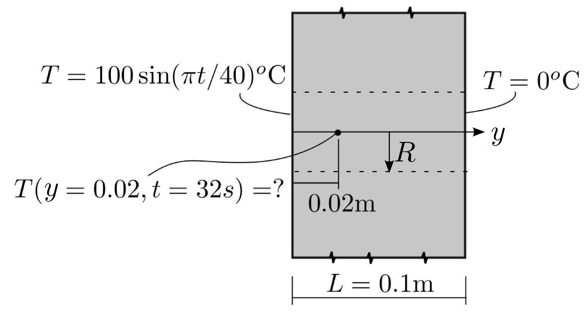
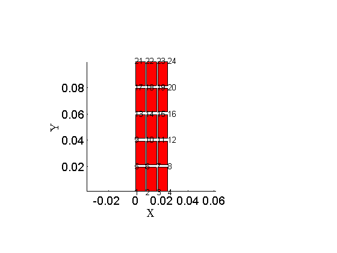
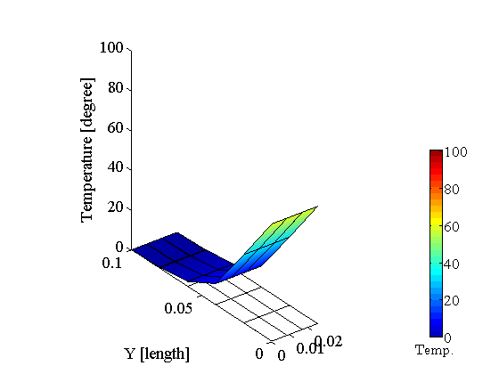
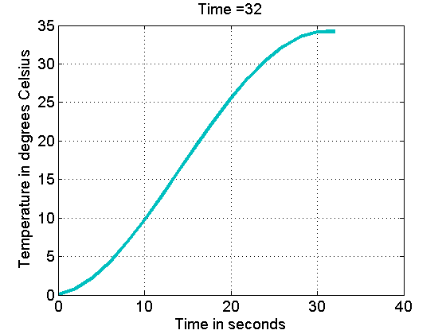

One-dimensional transient heat transfer (T3NAFEMS). Axially symmetric model.
Contents
Not done yet
Link to the m-file.
Description
The geometry is shown in Figure 1. The domain is a circular cylinder through the wall of radius equal to (1/4) of the thickness of the wall. A uniform mesh with 5 elements along the thickness of the wall and three elements along the radius is used.
A transient simulation is performed. The total simulation time is 32 seconds. The time step of two seconds is used.
Material: thermal conductivity = 35.0 W/m°C, specific heat = 440.5 J/kg°C, density = 7200 kg/m^3 .
Boundary conditions: Temperature prescribed as 0°C at the right-hand side surface, and as 100*sin(pi*t/40) °C at the left-hand side surface, where t is time in seconds. No heat flux parallel to the bounding surfaces of the wall is present. There is no internal heat generation. Initial conditions: All temperatures = 0°C.
|  |
| Figure 1. Definition of the geometry of the benchmark |
Target solution: Temperature of 36.60°C at the depth of 0.02 m from the left-hand side surface at 32 secs.
Reference: This is a test recommended by the National Agency for Finite Element Methods and Standards (U.K.): Test T3 from NAFEMS publication TNSB, Rev. 3, “The Standard NAFEMS Benchmarks,” October 1990.
Solution
function pub_T3NAFEMS_axi
pu= physical_units_struct;
Thickness of the wall.
L=0.1*pu.M;% thickness
Radius of the cylinder
R=L/4;% thickness
Target depth..
d=0.02*pu.M;% thickness
Material properties.
kappa=35.0*eye(2)*pu.W/pu.M/pu.K; % conductivity matrix cm = 440.5*pu.J/pu.KG/pu.K;% specific heat per unit mass rho=7200*pu.KG/pu.M^3;% mass density cv =cm* rho;% specific heat per unit volume
Prescribed temperature.
Tampl=100*pu.K;
Tamb=0*pu.K;% temperature at the right-hand side face
Tbar =@(t)(Tampl*sin(pi*t/40)+ Tamb);%hot face temperature
Length of time interval and time step.
tend= 32; % length of the time interval dt=2*pu.SEC; % time step
Number of elements through the thickness.
n=5;
Make sure the nodal locations include the target depth for the output.
xs=linspace(0,R,3+1)';
ys=unique([linspace(0,L,n+1), d])';;
[fens,fes] = Q4_blockx(xs,ys,struct('axisymm', true)); % Mesh
Display the mesh
gv=drawmesh({fens,fes},'nodes','fes','facecolor','r', 'shrink', 0.9, 'offset',0);
view(2);
labels
 Package up the model data.
clear model_data
model_data.fens =fens;
The one-dimensional region uses trapezoidal rule. This leads to lumped (diagonal) capacity matrix. Other rules may be employed, for instance Gauss rule.
clear region region.conductivity =kappa; region.specific_heat =cv; region.fes= fes; region.integration_rule =trapezoidal_rule(struct('dim',2));; model_data.region{1} =region;
Prescribed temperature at the left-hand side surface.
clear essential essential.temperature=Tbar; essential.node_list = fenode_select(fens,struct('box',[-inf,inf,0,0],'inflate',eps));; model_data.boundary_conditions.essential{1} = essential;
Prescribed temperature at the right-hand side surface.
clear essential essential.temperature=Tamb; essential.node_list = fenode_select(fens,struct('box',[-inf,inf,L,L],'inflate',eps));; model_data.boundary_conditions.essential{2} = essential;
Initially the wall is at the temperature fixed at the right-hand side surface.
clear initial_condition
initial_condition.temperature=Tamb;
model_data.initial_condition =initial_condition;
Now we describe the control parameters. The time interval for the integration and the time step.
model_data.dt= dt;
model_data.tend= tend;
And we define an observer function that gets called every time the algorithm for transient time stepping finishes a time step. We are going to collect the temperature at the target depth into an array and the corresponding time.
targetn =fenode_select(fens,struct('box',[-inf,inf,d,d],'inflate',eps));; function observer (t, model_data) Tn =gather_values(model_data.temp, targetn); Tfifth = [Tfifth Tn]; ts=[ts,t]; model_data=heat_diffusion_plot_raised_surface(model_data); view(3); end
Run the transient solver. Note that we initialize the arrays that will hold the results. The observer function is registered in model_data. The postprocessing parameters are also set for visualization that happens in the observer function.
Tfifth = []; ts=[];
model_data.observer = @observer;
% model_data.postprocessing.range = [0,Tampl];
model_data.postprocessing.z_scale = 0.001;
model_data =heat_diffusion_transient(model_data);
 Plot the results and report the temperature at the target depth at the end of the time interval.
figure;
plot(ts,Tfifth,'linewidth', 3)
set(gca,'FontSize', 14); grid on
xlabel('Time in seconds')
ylabel('Temperature in degrees Celsius')
title (['Time =' num2str(tend)]);
disp(['The temperature at the target depth is ' num2str(Tfifth(end)) ' at the time ' num2str(ts(end)) ' seconds'])
The temperature at the target depth is 34.202 at the time 32 seconds
The reference is 36.6 degrees Celsius.
Discussion
The coarse mesh with the time step of two seconds produces error of approximately 7%. The error decreases with both the space-direction refinement and the reduction in the time step. Just change the variables n and dt to explore.
end